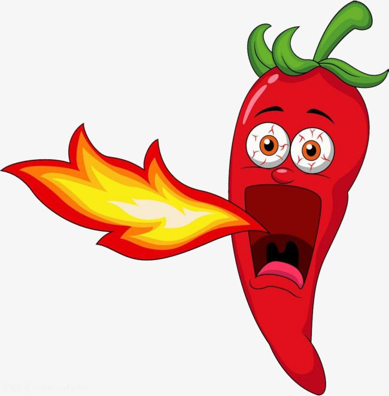

| TOP 5 csípős paprika | Csípősség (Scoville érték) |
| Carolina Reaper Chili Paprika | 2.200.000 SHU |
| Naga Morich | Bhut Jolokia | Ghost Pepper | 1.000.000 SHU |
| Red Savina Habanero Chili Paprika | 550.000 SHU |
| Habanero Chili Paprika | 500.000 SHU |
| Scotch Bonnet Chili Paprika (a Skótsapkás) | 400.000 SHU |
Ismered a legcsípősebbet?
paprika a burgonyafélék közé tartozó, Közép-Amerikából származó faj. Európába Kolumbusz orvosa hozta az első paprikát. A növény termése üreges bogyótermés, amely A- és C-vitaminban igen gazdag. Csípős ízét a kapszaicin nevű hatóanyag okozza. Jelentős fűszer- és gyógynövény. Magyarországon a XVI. század óta számos változatban termesztik.
Csípősség
A paprika csípősségének (kapszaicin tartalmának) mértékegysége a Scoville egység. Értéke 0 (édes) és 300 000 (ehetetlenül csípős) egység között változik. Egy paprika Scoville értéke azt az arányt mutatja, amely megadja, hogy a minta csípőssége milyen arányú hígításban nem érezhető már.